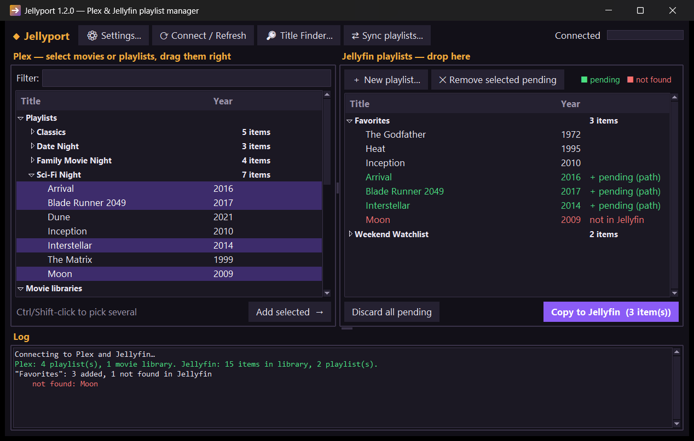

Copy playlists with drag and drop, keep them in sync in either direction, find any title in your libraries and build new playlists from it. Free and open source.

Copy missing playlist entries Jellyfin → Plex, Plex → Jellyfin, or both. Missing playlists are created, and nothing is ever removed.
Search every library with two filters, group by prefix, sort by date added, open a title's folder, and turn your selection into a playlist on Plex, Jellyfin or both.
Drag single movies, a selection, or whole playlists from Plex into any Jellyfin playlist.
New items show in green and missing ones in red. Nothing changes until you click Copy.
Movies are matched by file path, IMDb, TMDb or TVDb ID, or title and year.
Path mappings handle Jellyfin in a container on Synology, Unraid or QNAP.
Movies that are already in a playlist are skipped, so you never get duplicates.
It talks only to your own servers. No accounts, no cloud, no tracking.
Yes. It's MIT-licensed open source. If it saves you time, a star on GitHub is appreciated.
The installer isn't code-signed yet. Click More info → Run anyway, or build it yourself from the source on GitHub.
Make sure Jellyfin has scanned and identified them. If Plex and Jellyfin see your NAS folders under different paths, add a path mapping in Settings, e.g. /volume1/video/Movies => /media/movies.
No. Jellyport only reads from Plex. It writes only to Jellyfin, and only when you click Copy.
Video playlists, including TV episodes inside them, are supported. Music is on the roadmap. On macOS and Linux, run python jellyport.py. It needs only Python 3.